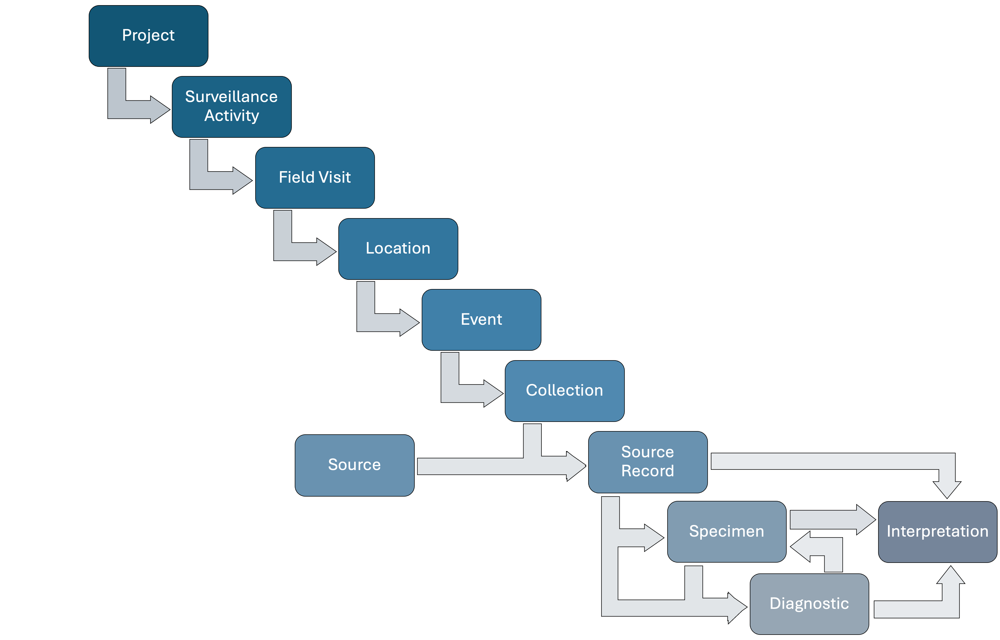
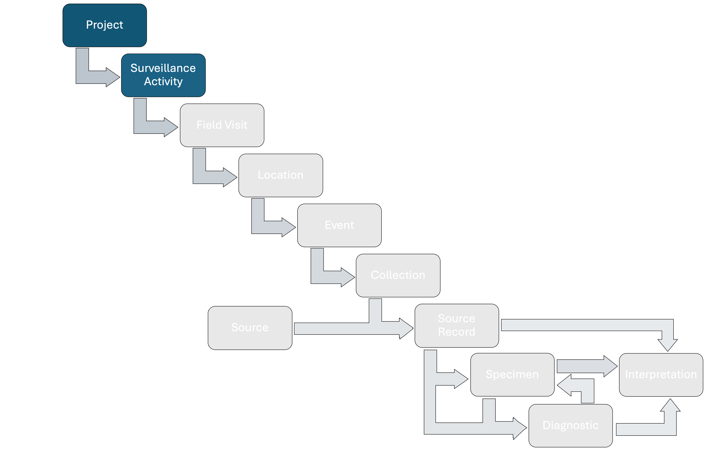
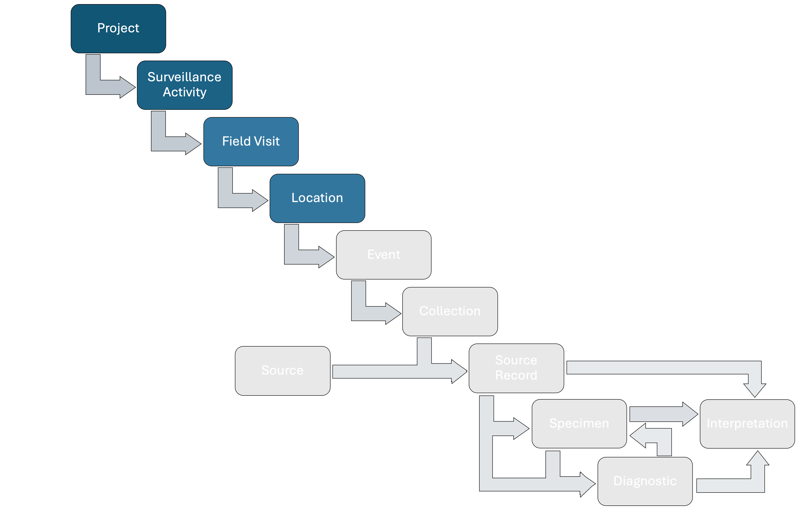

Wildlife Health Data Model
The Wildlife Health Data Model (WHEDMO) is a data model that aims to accommodate wildlife health data coming from different sources, including local to national wildlife health surveillance systems (surveillance of diseases, pathogens, and toxins), research initiatives, or citizen-science based projects, among others.
Wildlife health surveillance systems can include a wide range of methods and targets. The plethora of surveillance types (general surveillance, targeted surveillance, participatory surveillance, sentinel surveillance, early warning surveillance, syndromic surveillance, etc) reflects the potential variability of the strategies, methodologies, and objectives associated with health assessment in wildlife. The strategies can include information from open sources, community members, and ranger patrols. Active capture of animals or the testing of specimen from wild animals in markets and collection of specimens of different types could be part of the strategies as well. The methodologies can focus in pure observations of herds and animals, hosts or vectors, the collection of carcasses to conduct necropsies, multiple diagnostic tests, among others. The objectives can range from early detection of pathogens, measure of disease levels and their impacts, prove absence of disease, evaluate disease control methods, etc. Furthermore, the variability with respect to the potential targeted populations and hazards (biological, chemical, physical, or physiological) support the creation of “infinite” types of data.
On the other hand, harmonization of data and systems to effectively track, store, retrieve and disseminate information are foundational pillars of wildlife health surveillance systems. However, both pillars have being absent historically and globally. The challenge is evident. Promote best data practices when data are multiple and variable. The Wildlife Health Intelligence Network has develop a data model designed to respond to this challenge.
Introduction
The WHE data model contains units that are hierarchical organized, starting from the highest level of “Projects”, followed by “Surveillance Activities”, “Field Visits”, “Locations”, “Events”, “Collections”, “Sources”, “Source Records”, “Specimens”, and “Diagnostics”. Briefly, Projects are a set of Surveillance Activities with a common leader and organizer (e.g., a national wildlife health surveillance system). Surveillance Activity is a surveillance task that have a specific methodology and objectives. Field Visit represents a period of time when activities are conducted in the field. The Location is a specific area where surveillance activities are conducted. An Event is a site where wildlife health surveillance data is collected from. An Event can contain different Collections that represent different methods and efforts to obtain Source Records from Sources. Sources are the units that can provide Specimens for hazard detection or whose health is assessed by an agent at time t. There are four Source types in the data model: group of animals, individual animals, sites to collect environmental tissue, and sites to collect arthropods. Specimens are tissue taken from the Sources at time t (Source Records). Diagnostics are the tests conducted in lived animals (“Animal Source”), Carcasses, or Specimens collected to assess hazards.
Out of this hierarchy is the component Diagnosis, which is the final status assigned to a Diagnostic, a Specimen, or a Source at time t with respect to the hazards surveyed, based on well-documented case definitions. The basic relationships among the basic units of the data model are shown in Figure 1 below.

Figure 1: Basic relationships among the basic units of the data model.
The data model remains simple when the wildlife health data is simple, and it gets more complicated as the data structure and variability increases. For this reason, many components of the data model are conditional, meaning that they are needed depending on the structure of the data. Let’s start with example 1: wildlife mortality reported by a community member through an application. The methodology must be explained in the Surveillance Activity metadata. The Field Visit could be one per year to categorize the reports per year. The Location can be defined by the position sent by the mobile device when each dead animal is recorded. In this case, it could be a county of a zip code. In the example, an Event has Source Records corresponding to dead animals. No Specimen, Diagnostic, or Laboratory data is generated. No Collection effort is associated with the Events, and the animals are not clustered beyond the Field Visit, the Location, and the Events.

Figure 2: Components of the data model to contain data from example 1.
The data model is not designed for wildlife population monitoring. However, the data model includes key identifiers so wildlife health and population data can be integrated seamlessly.
More complex relationships among the basic units in the data model, as well as other extra information in the data model are explained in the section “Complexities”. It is recommended first to learn more about the basic units from Project up to Diagnosis by continuing reading this documentation and checking the menu on the top right corner of this website and click on the corresponding unit ->.
Main Units of the Data Model
Project
A Project in the data model is a surveillance initiative supported by specific entities. For example, the PREDICT Project funded by USAID, an isolated cross-sectional study with a single field visit to a single location (sample collection in a market), or a national or local wildlife health surveillance network led by a government agency. Projects are the highest hierarchical unit in the database and they contain at least one Surveillance Activity. Projects can involve a single date or they can extend for as long as needed.
Properties of a Project include the Project ID, Project Code, Project Cross Reference ID, Project Cross Reference Origin, Project Leader, Project Funding Source, among others (see Data Dictionary).
Surveillance Activity

A Surveillance Activity in the data model refers to a set of activities to collect data with the aim of detecting, proving freedom of disease, measure incidence or prevalence, or assessing trends of specific health hazards within specific populations, using a common methodology. For example, the longitudinal assessment of coronavirus shedding in two Eidolon helvum bat roosts in Africa collected a fix number of feces from two bat roosts of the same species on a monthly basis for 12 months and tested the feces for coronaviridae sp.
Surveillance Activities can encompass targeted surveillance, scanning surveillance, citizen science monitoring, ranger patrols, and others. Surveillance Activities include detailed metadata that describe their objectives and methods, including information on the targeted species, populations, hazards, samples, collection methods, diagnostics, and case definitions, among others. A Surveillance Activity can include multiple Field Visits and Locations and Source types (groups, individual animals, environmental sources, or arthropod collections).
It is recommended that the definition of Event, what an Event represents, is unique for the Surveillance Activity and also to keep a minimum number of hazards targeted under the same Surveillance Activity. In general, a specific set of methods, strategies, and objectives should equal a specific Surveillance Activity.
Field Visits, Locations, Events, Sources, Source Records, and Diagnostics usually belong to a single Surveillance Activity. This is the Surveillance Activity that lead to the Field Visits at different Locations to document Events, collect Sources and Specimens, perform Diagnostics for a specific hazard, and provide Diagnosis for Diagnostics, Specimens, and Sources. However, there are exceptions to this rule (See the “Complexities” section below). Furthermore, a Surveillance Activity usually includes Field Visits, Locations, Events, Sources, Source Records, and Diagnostics, but this is not always the case (See the “Complexities” section below).
Most of the properties of a Surveillance Activity are associated with the standard documentation of the methods use to conduct the corresponding surveillance initiative. These properties include, Start Date, End Date, Hazards and Taxa targeted, Organizations involved, the definition of Location, the definition of Event, the type of Sources included, the methods to find or establish Sources, Specimens collected and method of collection, the diagnostics used, case definitions for the diagnostic tests, the Specimens, and the Sources at time t, among others.
Outbreak Investigation
Each outbreak investigation is considered a Surveillance Activity. Outbreak Surveillance Activities can encompass the Field Visit that lead to the Outbreak detection and the following Field Visits associated with Outbreak investigation and control. The detection could have been made during a Field Activity conducted by rangers during their patrols. This initial Field Visit and its components should be assigned to a the ranger patrol Surveillance Activity and to the Outbreak Surveillance Activity. The following Field Activities that could be completed by veterinarians or public health officers conducting the official outbreak investigation receive the outbreak Surveillance Activity only (See Complexities below).
Field Visit

A Field Visit in the data model represents a time period, including a start and end date, to visit Locations, identify Events and Sources, collect Specimens (see below) and document data from them. A Field Visit can include various types of Locations (see below), such as markets, natural areas, rehabilitation centers, caves, etc. that are visited within the same trip and common start and end date. A Field Visit should include at least one Location up to an indefinite number of Locations (areas).
Properties of a Field Visit include the Start and End Date, Field Visit ID, Field Visit Code, Field Visit Cross Reference ID, Field Visit Cross Reference Origin, Leader of the Visit, among others (see Data Dictionary). If the data of interest per Field Activity includes attributes that are not part of the data model, it has to be reported as part of the Surveillance Activity metadata and it is recommended to keep track of these attributes in a different source (another database, an excel sheet, etc.). Common extra Attributes can be added to the data model in the future. Missing Options for single- and multi-selection attributes of Field Visits can be added as long as they promote a controlled vocabulary.
Location

A Location in the data model refers to a general area (polygon) where Events can be identified, and Source Records, Carcasses, and Specimens can be collected from. A Location serves as a way to group data in areas compared to the Events that group data under a exact latitude and longitude (‘Event’; see below). A single Location (area) can include between zero Events (e.g., a Location is explored but no Event is found) up to a indefinite number of Events (points).
What a ‘Location’ represents will inevitably vary depending on the Surveillance Activity methodology. For example, for the collection of arthropods, a Location can represent a parcel where traps are set. In a structured/hierarchical/clustered/nested research, the Location could represent a grid cell. In ranger patrols, the Location can correspond to either the full protected area, or a specific zone within the protected area. It is up to the user to define what unit the Location area represents and report it in the Surveillance Activity metadata.
Properties of Location include Location ID, Location Code, Location Cross Reference ID, Location Cross Reference Origin, Location Type, Environmental Characteristics, among others (see Data Dictionary). If the data of interest per Location includes attributes that are not part of the data model, it has to be reported as part of the Surveillance Activity metadata and it is recommended to keep track of these attributes in a different source (another database, an excel sheet, etc.). Common extra Attributes can be added to the data model in the future. Missing Options for single- and multi-selection attributes of Locations can be added as long as they promote a controlled vocabulary.
Event

An Event in the data model refers to a distinct wildlife health event that occurs at a specific longitude and latitude on a particular date (time stamp). A single Event (point) can include between zero Collections (e.g., opportunistic detection of Sources) up to a indefinite number of Collections.
The definition of a wildlife health event, and thus what an ‘Event’ represents, will inevitably vary depending on the Surveillance Activity. For example, in active surveillance efforts, an Event can refer to the site where animals are captured, starting at time t, to obtain Specimens, the site and time where a dead dead animal is found during a ranger patrol, the site and time where water is collected from a pond. In the case of surveillance for vector-borne diseases, an Event can represent a site where one or several traps for vectors are deployed at time X. In the case of beached fish, an Event can represent the position and time of recording of each individual dead fish in one extreme, or the total count of dead fish across the beach reported as a single point in the other extreme. In the context of a wet market, the definition of Event can be applied to the market, to vendors, to the stalls of vendors, or to the cages in the stalls at time t. For study A the Event could the grid cell where traps are deployed, whilst for study B it could each trap within a grid cell.
Moreover, the presence of at least one Source could be needed to establish an Event. For example, a dead animal found during a ranger patrol at time t leads to an Event. In Active Surveillance, an Event might not have any Source, for example, a capturing effort starting at time t that ends with no animals captured. Additionally, the definition of an Event can include or not healthy animals. In the example of the dead animal found by the ranger at time t, it could be possible that the Event definition includes the documentation of healthy animals or not.
Consequently, an Event in wildlife health surveillance can represent different entities depending on the objectives and the methodology used to collect wildlife health data. It is up to the user to define what unit the Event represents and report it in the Surveillance Activity metadata. It is recommended that each Surveillance Activity has a single definition of what an Event represents.
Properties of Event include the Start Date, Event ID, Event Code, Event Cross Reference ID, Event Cross Reference Origin, Longitude, Latitude, the Coordinate Reference System used, among others (see Data Dictionary). If the data of interest per Event includes attributes that are not part of the data model, it has to be reported as part of the Surveillance Activity metadata and it is recommended to keep track of these attributes in a different source (another database, an excel sheet, etc.). Common extra Attributes can be added to the data model in future versions. Missing Options for single- and multi-selection attributes of Events can be added as long as they promote a controlled vocabulary.
Collection

A Collection in the data model represents the effort associated with the observation, finding, capturing, etc. of Sources at the longitude and latitude of an Event that starts at the Event time stamp. For example, the number of hours an observer spent in a post to identify dead birds in a wetland and the tools used to find it (e.g., telescope, binoculars); the number of camera traps in a specific latitude and longitude to photograph a sick animal and the hours they were deployed; the distance and time traveled by a ranger to find a dead animal; the type of trap, bait, time period, and set of equivalent traps to collect mosquitoes at a specific site.
A Collection can contain between zero Source Records (e.g., a capturing effort but no animal is captured) up to a indefinite number of Source Records. If Sources are found opportunistically, then no Collection is involved (e.g., articles from news articles where the coordinates of the site and the date reported determine the Event and the animals involved are the Source Records).
A Collection usually contains a specific type of Source Record (either Group Source Record, Animal Source Record, Environmental Source Record, and Invertebrate Source Records). This is because observation, capturing, or other efforts are usually targeting groups of animals, or individual animals, or environmental tissue, or arthropods. On the other hand, because multiple Collections, targeting any of these objectives, can be part the same Event (e.g., traps to collect mosquitoes and also use a device to filter and collect air at the same site), then an Event can contain Source Records of multiple types.
Collections are defined by the type of spatial and temporal units to complete it, the number of those units, and the position of those number of units with respect to the spatio-temporal coordinates of the Event. A spatial unit can be mist nets deployed, CO2 traps deployed, camera traps deployed, kilometers walked, square kilometers scanned, etc. A temporal unit can be hours walking, days searched, minutes observed, etc. Then, each Collection has a number of the assigned unit (e.g., “6” for number and “kilometers walking” for unit). Finally, the position with respect to the Event spatio-temporal coordinates can be “at the Event”, “around the Event”, “from the beginning of the Event”, “up to the Event”, etc.
For example, a Collection of an Event constituted by an individual at a post in a wetland that spent 6 hours to scan for dead birds using binoculars has as spatial Attributes: “1”, “observer binocular” “at the Event”; and temporal Attributes: “6”, “hours”, “at the Event”.
Another example is a ranger walking for 10 kilometers since the beginning of the patrol to find a dead animal. The spatial Attributes are: “10”, “kilometers walked”, “to the Event”; and temporal Attributes are not relevant (or the time walking to get to the Event could be reported as well). Similar approach can be used to record animals found during an outbreak investigation. A final example is two CO2 traps and a BG trap to collect mosquitoes deployed for a night. In this case, there are two Collections as a set of equivalent efforts constitute a single Collection per Event. The spatial Attributes of the CO2 traps are: “2”, “CO2 traps”, “at the Event”; and temporal Attributes are: “1”, “night”, “at the Event”. The spatial Attributes of the BG trap are: “1”, “BG trap”, “at the Event”; and temporal Attributes are: “1”, “night”, “at the Event”. To document the three traps separately, three Events with a single trap each must be created.
It is not accepted to provide the spatial relationship with the Event as “meters after the Event” or the time relationship with the Event as “hours before the Event”.
Collections also allow to characterize problems during the search for Sources, such as camera traps running out of battery or stolen, torn mist nets, etc.
When Source Records are obtained without a Collection (e.g., animals sampled in a market, citizen science reports of dead animals) the property “Unit” is “none”, the “number of units” is NA, and the positioning with respect to the Event is NA.
Further properties of Collection include the Collection ID, Collection Code, Collection Cross Reference ID, Collection Cross Reference Origin, Problems, among others (see Data Dictionary). If the data of interest per Collection includes attributes that are not part of the data model, it has to be reported as part of the Surveillance Activity metadata and it is recommended to keep track of these attributes in a different source (another database, an excel sheet, etc.). Common extra Attributes can be added to the data model in future versions. Missing Options for single- and multi-selection attributes of Collection can be added as long as they promote a controlled vocabulary.
Source and Source Records

Generalities
A Source in the data model is a unit that can be observed and provide Specimens, including carcasses, organic tissue, abiotic tissue, or arthropods. Sources can provide between zero (no sampling) up to indefinite number of Specimens (tissue to conduct diagnostic tests). The data model manages four types of Sources: i) a co-specific group of animals (Group Source), ii) individual animals (Animal Source), iii) sites that can provide abiotic tissue of interest (e.g., sediment, soil, water, air) or biotic material of animal origin whose individual or group animal of origin is unknown (Environmental Source, e.g., feces found in the field), and iv) sites where active or passive collection arthropods at any life stage is completed (Arthropod Source). A Group Source could correspond to a specific bat roost of species X sourcing guano, an Animal Source could be a collared animal, an Environmental Source could be a pond where water is collected from, and an Arthropod Source could be a site where mosquito larvae are collected from. Sources contain time-independent data only, such as the species of an animal in the case of a Group Source or an Animal Source (more below).
All Sources can potentially be individually identified and followed over time if needed. Environmental and Arthropod Sources are associated with a specific site making it easy to track them over time; however, Animal Sources and Group Sources might not be individually identified preventing following them over time in new Collections or an opportunistic finding.
A Source observed, collected, or captured at time t can be linked to Events through a Collection (see previous section) via a Source Record (the Source at time t). These Source Records contain time-dependent data only, such as health status at time t (Group and Animal Sources). Sources individually identified can be followed longitudinally and have multiple Source Records that link them to multiple Events over time of the same or different Surveillance Activity. For example, a bat (Source) caught in a mist net (Collection) set up at a roost (Event), identified individually, and recaptured in a following Event. This bat is linked to the capture Event and the recapture Event through a single Source Record for each Event.
Sources that are not individually identified will be linked as a Source Record to the Event where they were observed or captured only. For example, a bat (Source) that is captured (Collection) and sampled during an Event but not marked or a dead animal not identified found by a ranger during a patrol. The bat and the animal found are linked only to the Event they were capture and observed, respectively.
Source Records found opportunistically can be linked to an Event in the absence of a Collection. For example, a dead animal (Source Record) reported by a citizen who found it in a beach (Event).
Group Source
A Group Source is a unit of co-specific individuals (animals of the same species) associated to a herd, an area, a site, a farm, a cage, a stall, an enclosure, or other that makes the individuals part a single epidemiological unit. Group Sources can be observed, captured, and provide Specimens at time t as a collective. Data of a Group Source include the Species, the Group Source ID, the Group Source Cross Reference ID, among others (see Data Dictionary).
The purpose of Group Source is to record individuals at the species level instead of individual by individual. This can occur when herds are the unit of interest, when protected area rangers find animals of the same species in a health event, or to document animals in a unit such as a cage, stall, or vendor of a market. For example, animals of two species in a single cage, not tracked individually, represent two Group Sources (one Group Source by species).
Group Source Record
A Group Source Record consists of a count of the animals in the Group Source at time t, stratified by sex, age, and health status (e.g., healthy, injured, sick, or dead). Other properties of the Group Source Record are Observed Anomalies, Potential Causes of Disease or Death if they apply at time t, among others (see Data Dictionary). Properties of a Group Source Record are documented at the group level, therefore, multiple options can be reported. For example, a Group Source with three dead animals can receive several potential causes of death. It is not possible to know the distribution of the potential causes of death and other properties across individuals of a Group Source Record, but only that they were present in at least one individual.
Group Source Records can include a mix of dead, diseased, poisoned, infected, injured, and healthy individuals of the same species or just one of them if all the animals of the species are dead. A Group Source Record of only healthy animals can also be part of a Health Event depending on the definition of Event.
Group Source Records can have a single individual. For example, rangers patrolling a protected area might find a dead animal of species X and two dead animals of species Y at the same site (Event) and rangers record their animal data as Group Sources. If this is the case, the single animal of species X belong to a Group Source Record and the two animals of species Y correspond to another Source Group Record. Moreover, if only a single animal of a known herd is observed at time t, then that individual is the representation of the herd for the Source Group Record.
An Event can have more than one Group Source Record of the same species. For example, animals of the same species in two cages hold by a vendor in market where the vendor is considered an Event. Then the animals per cage could be a unit, and therefore, two Group Source Records of the same species under the same vendor (same Event).
An Group Source can be used directly for a Diagnostic (e.g., e.g., assessment of fat in carcasses of animals belonging to a specific herd). The data model can accommodate Diagnostics applied to a group itself rather than a Specimen taken from that Group Source.
An animal of species X documented as part of a Group Source Record must not be included as an Animal Source Record and vice-versa. If an Event contains a Group Source Record of species X and an Animal Source Record of species X, then the total number of animals of species X at the Event is the sum of the number of animals of species X in the Group Source Record and the single individual of species X recorded as an Animal Source Record. An example is a herd of cows illegally raised in a protected area whose health is assessed at time t. The herd of this example contains 20 cows. Two of them are sampled and the rest are part of a single unit. In this case, the sampled cows can be added as two Animal Source Records (one per sampled cow) and the remaining 18 animals can be added as a single Group Source Record that distributes the animals per sex, age, and health status. The total number of cows are the individuals in the Group Source Record (18) and the two cows recorded as Animal Records. The “herd” identity of the 20 cows can be kept using a cluster (see “Complexities”). If the Group Source Record contains the original 20 cows and also two Animal Source Records, then the total number of cows will be 22.
Animal Source
An Animal Source represents an individual animal whose specific individual-level data is of interest. Animal Sources can be observed, captured, tested, and provide Specimens at time t, including the full carcass to have a Necropsy completed. Animal Source data includes the Species, the Animal Source ID, the Cross Reference ID, the Sex, among others (see Data Dictionary). Past marking codes (if any have been used) are considered immutable and entered as data of the Animal Source.
An example of Animal Sources are animals of the same or different species caged in a live market. If the data of the animals is to be collected at the individual-level, then each individual in the cage represents an Animal Group Source.
Animal Source Record
An Animal Source Record consists of an Animal Source at time t . Properties of an Animal Source Record are its Age, Health Status, Observed Anomalies, and Potential Cause of Disease or Death if they apply at time t, among others (see Data Dictionary). The current marking code of an individual animal at time t is considered mutable and a property of the corresponding Animal Source Record. Properties of an Animal Source Record can receive single or multiple choices. For example, the observed health status is only one (live healthy, live sick) but an Animal Source Record can receive several observed anomalies if they observed in the same individual at time t (wounded, hair loss, diarrhea, etc. See Data Dictionary).
An Animal Source can be either dead, diseased, poisoned, infected, injured, or healthy at time t. An Animal Source Record with an observed health status “live healthy” can be part of an Event depending on the Event definition (e.g., a healthy animal of species X next to dead animals of species X, Y, and Z; or healthy animals captured for Specimen collection).
An Animal Source Record can be used directly for a Diagnostic (e.g., X-rays in a live animal at time t). The data model can accommodate Diagnostics applied to the individual itself rather than a Specimen taken from that Animal Source.
An animal of species X documented as part of a Group Source Record cannot be included as an Animal Source Record and vice versa. If an Event contains a Group Source Record of species X and an Animal Source Record of species X, then the total number of animals of species X at the Event is the sum of the number of animals of species X in the Group Source Record and the single individual of species X recorded as an Animal Source Record. An example is a herd of cows illegally raised in a protected area whose health is assessed at time t. The herd of this example contains 20 cows. Two of them are sampled and the rest are part of a single unit. In this case, the sampled cows can be added as two Animal Source Records (one per sampled cow) and the remaining 18 animals can be added as a single Group Source Record that distributes the animals per sex, age, and health status. The total number of cows are the individuals in the Group Source Record (18) and the two cows recorded as Animal Records. The “herd” identity of the 20 cows can be kept using a cluster (see “Complexities”). If the Group Source Record contains the original 20 cows and also two Animal Source Records, then the total number of cows will be 22.
Vaccination
The data model allows the inclusion of vaccinations completed in an Animal Source by the time it was captured or immobilized at time t. It is possible to include as many vaccination records as needed to an Animal Source Record. Thus, the vaccination data accumulates for the corresponding Animal Source.
Carcass
The carcass of a dead Animal Source can provide Specimens. A Carcass entered to the database comes from a specific Animal Source and they are collected at a single specific time t. Therefore, each Carcass is associated with one and only one Animal Source Record (when the Carcass was collected). Properties of a Carcass include its Decomposition Condition, Storage During Transport, Owner, Availability, among others. Moreover, Carcasses are stored and changes in the storage or movement of the Carcass from one storage facility to another can be multiple over time. Similarly, Carcasses can be exported multiple times. Changes in storage associated with an exportation must occur after the exportation is completed and the Carcass can be stored in the destination facility.
A Carcass does not provide Specimens directly but through the dead Animal Source Record.
A Carcass is not used directly for a Diagnostic but through the dead Animal Source Record (e.g., X-rays in a dead animal). The diagnostic information is part of the set of Diagnostics conducted in the corresponding Animal Source.
Necropsy
A Necropsy is associated with a specific Animal Source Carcass. The earliest date a Necropsy can occur is when the dead animal was found and a Field Necropsy was conducted (no Carcass collection) or after the Carcass was collected.
Necropsy data includes the a Necropsy Identifier, the Necropy Cross Reference Identifier, the Date of the Necropsy, findings per system, among others (see Data Dictionary).
Necropsies can be primary or secondary. A primary necropsy usually starts with an intact carcass (not previously used in a necropsy). A secondary necropsy is usually conducted by a veterinarian pathologist using pictures of the primary necropsy or using a carcass already necropsied.
A Necropsy does not provide Specimens directly but through the Animal Source Record.
Environmental Source
An Environmental Source is a unit in space where Specimens that cannot be associated with a Group Source, an Animal Source, or Arthropod Source can be collected from (e.g., the site where feces of unknown source are found). Properties of an Environmental Source include the Environmental Source ID, the Cross Reference ID, among others (see Data Dictionary).
Environmental Source Record
An Environmental Source Record is the biotic or abiotic tissue from the Environmental Source at time t recovered using a common Collection. For example, the water collected from a pond (Event) at site X (Environmental Source) using a device (Collection) to obtain water at time t (Environmental Source Record). Properties of an Environmental Source Record include Record Number, Type of Tissue, the Quantity, and the Quantity Unit (see Data Dictionary).
A key difference between the Environmental Source and the Group and Animal Sources is that an Event can contain multiple Records of a single Environmental Source (many Collections from the same Environmental Source at time t). Instead, an Event can contain a single Record of many Group and Animal Sources (in one or many Collections). An Event can only contain a single Environmental Source, but many Records can be retrieved (one per collection). On the opposite, many bats can be captured in a mist net (many Sources), but they can only provide one Record per Event (see figure at the end of this section).
Another key difference is that “species” for Group and Animal Sources is a property of the Source, whilst for Environmental Sources is a property of the Record. For example, it could be possible to identify the species that dropped feces found in the field as “mammal”. If this is the case, then the Species property can be completed with this level of taxonomy.
If there is a failed Collection of tissue at time t from the Environmental Source) then it is the Collection that exists without the Environmental Source Record. But an Environmental Source Record cannot be empty.
Arthropod Source
An Arthropod Source is a unit in space where arthropods can be taken from (e.g., a household in the forest where traps can be set). Properties of an Arthropod Source include the Source ID, the Cross Reference ID, the Cross Reference ID Origin, among others (see Data Dictionary).
If the interest of the Surveillance Activity is at the arthropod individual level (e.g., butterflies with problems in their wings or with parasites), then the user should consider these arthropods as Animal Sources. Arthropods from Animals Sources (attached ticks, lice, fleas, mites) are Specimens (see next section) from an Animal Source and not Arthropod Sources.
Arthropod Source Record
An Arthropod Source Record is the arthropods of the same species collected at the Arthropod Source at time t using a common Collection. For example, the mosquitoes of species X collected (Event) at the household in the forest (Arthropod Source) at time t (Arthropod Source Record) using a specific type of trap (Collection). This means that mosquitoes of a specific species collected by CO2 traps deployed at the Arthropod Source at time t is an Arthropod Source Record and that mosquitoes of a specific species collected by any number of BG traps deployed at the Arthropod Source at time t is another Arthropod Source Record. The properties of an Arthropod Source Record include Record Number, Species, and the mosquitoes distributed by age, sex, and condition (females only), among others (see Data Dictionary).
Similar to Environmental Sources, a key difference between the Arthropod Source and the Group and Animal Sources is that an Event can contain multiple Records of a single Arthropod Source (many Collections and many species at the same Arthropod Source at time t). Instead, an Event can contain a single Record of many Group and Animal Sources. An Event can only contain a single Arthropod Source, but many Records can be retrieved (one per Collection per species). On the opposite, many bats can be captured in a mist net (many Sources), but they can only provide one Record per Event (see Figure at the end of the section).
Similarly, another key difference is that “species” for Group and Animal Sources is a property of the Source, whilst for Arthropod Sources is a property of the Record. For example, mosquitoes obtained through CO2 traps (Collection) deployed at a specific site (Source) will be identified and counted by species after the Collection and they will constitute an Arthropod Source Record.
If there is a failed Collection of arthropods at time t from the Arthropod Source) then it is the Collection that exists without Arthropod Source Records. But an Arthropod Source Record cannot be empty.

Specimen

Generalities
In the data model, Specimens are tissue or material used to conduct Diagnostics (See Diagnostics) and identify hazards or other potential health threats. Specimens can be collected from Source Records or created from other Specimens (Pooled Specimens) or from products derived of Diagnostic tests (Diagnostic Products). Specimens can contain a single type of tissue coming from a single or multiple Source Records and Specimens, or multiple types of tissue coming from a single or multiple Source Records, Specimens, and Diagnostic Products (see Diagnostics below):
In summary:
Specimens can be collected from a single Group or Animal Source Records. These Specimens can contain a single type of tissue (e.g., blood) or multiple types of tissue from the same Source Record (e.g., blood and saliva).
Specimens can be created from a single Environmental and Arthropod Source Records. These Specimens can contain a single type of tissue only (e.g., a site with water can only provide water and a group of Culex sp. mosquitoes can only provide a subset of Culex sp. mosquitoes).
Specimens can be created by mixing the tissue sourced by many Group, Animal, Environmental, and Arthropod Source Records. Depending on the type of Source Records involved and the tissues provided by each one of them, these Specimens can contain a single type of tissue or several of them.
Specimens can be created from Diagnostic Products.
Pooled Specimens with a single or multiple types of tissue can be created by mixing Specimens from a single or multiple Source Records with a single or multiple types of tissue, Specimens from Diagnostic Products, and other Pooled Specimens with a single or multiple types of tissue.
Specimens are characterized by Specimen ID, Tissue Type, Specimen Original Amount, Specimen Current Amount, their Origin, Ownership, among others (see Data Dictionary). Moreover, Specimens are stored and changes in the storage or movement of the Specimens from one storage facility to another can be multiple over time. Similarly, Specimens can be exported multiple times. Changes in storage associated with an exportation must occur after the exportation is completed and the Specimen can be stored in the destination facility.
Specimens without any amount of tissue left remain in the data model so the last storage, exportation, and use in Diagnostics can be traced.
Specimens of Group Source Records
An example of Group Source Specimen are feces collected from the bottom of a cage with animals of the same species but it is unknown which of the animals dropped the feces.
A Group Source used directly for a Diagnostic (e.g., assessment of fat in carcasses of animals belonging to a specific herd) is not a Specimen (see Sources And Source Records).
Group Source Specimens cannot be OBTAINED after the last date the Group Source was observed (the last Record of the Group Source). For example, it is possible to collect feces from a cage that restrains a Group Source longitudinally and also from the same cage after the animals of the Group Source were moved. In this case, the Specimen from the empty cage does not belong to the Group Source but to an Environmental Source. The sampling of the feces from the empty cage belongs to a different Event. To keep the connection between the corresponding Specimens, it is possible to cluster the Group Source Records and the Environmental Source Record (see Complexities).
Specimens of Animal Source Records
An example of Animal Source Specimen is 2 ml of blood taken from a lion.
An Animal Source used directly for a Diagnostic (e.g., ultrasound in an animal) is not a Specimen (see Sources And Source Records).
Animal Source Specimens cannot be OBTAINED after the last date the Animal Source was observed (the last Record of the Animal Source). For example, it is possible to collect feces from a cage that restrained an Animal Source longitudinally and also from the same cage after the animal was moved. In this case, the Specimen from the empty cage does not belong to the Animal Source but to an Environmental Source. The sampling of the feces from the empty cage belongs to a different Event. To keep the connection between the corresponding Specimens, it is possible to cluster the Animal Source Records and the Environmental Source Record (see Complexities).
The data model DOES accept Animal Source Specimens that are CREATED after the last date the Animal Source was documented (the last Record of the Animal Source). New Specimens can be generated during a Necropsy or from a stored Carcass. In this case, the date of Specimen creation is not necessarily the date when the Animal Source was found, when the Carcass was collected, or when the animal died, but after the storage of the Carcass or the date of the Necropsy (primary or secondary). It is possible to track if a Specimen was collected in the field (from the animal, carcass, during a field necropsy, or the ground near the animal), or in a facility from the carcass or during a primary or secondary Necropsy based on the information entered for Specimens.
Specimens from Environmental Source Records
An example of Environmental Source Specimen is 10 grams of soil collected from a specific site (Environmental Source). Another useful example are feces of unknown origin found in the field at time t (Source Record) at a specific site (Source).
In this second example it is possible to: i) collect the full feces or ii) take swabs from it. In the former case, the feces are the Source Record and the Specimen (the Specimen can be stored. The Source Record cannot be Stored). In the latter, the feces are just the Source Record whilst the swabs are the Specimens.
In the case of Environmental Source Records, their type of tissue is determined by the type of the Specimen Source Record. For example, water collected at time t (Environmental Source Record) from a pond (Environmental Source) can only yield tissue of type “water”. If a Specimen contains tissue from a single Environmental Source Record, then, the type of tissue of the Specimen must be the same type of tissue of the Environmental Source.
The data model DOES accept Environmental Source Specimens that were CREATED after the last date the Environmental Source was visited (the last Record of the Environmental Source). New Specimens can be generated from a contained Environmental Source Record (for example, a bottle with sediment that is divided in Specimens later). In this case, the date of Specimen creation is not necessarily the date when the Environmental Source Record was obtained but later.
Specimens from Arthropod Source Records
An example of Arthropod Source Specimen is the set mosquitoes of the same species coming from the same Collection. These are basically sub-groups of the mosquitoes present in the corresponding Source Record. In vector-borne disease surveillance, this last type of Specimen is usually called “pools”.
In the case of Arthropod Specimens, their type of tissue is determined by the Arthropod Source Record. If a Specimen contains tissue from a single Arthropod Source Record, then, the type of tissue of the Specimen is “arthropod” by default. In this case, the links of the Specimen with its origin allows to track the species of arthropod involved.
The data model DOES accept Arthropod Source Specimens that were CREATED after the last date the Arthropod Source was visited (the last Record of the Environmental Source). New Specimens can be generated from an Arthropod Source Record (for example, taking a new sub-set of mosquitoes from the Source Record and creating a new Specimen with mosquitoes of the species). In this case, the date of Specimen creation is not necessarily the date when the Arthropod Source Record was obtained but later.
Specimens with a mix of tissues coming from a unique or several Source Records
A bat is swabbed in its oral cavity and in its rectum but then the swabs are placed together in a tube and considered a single Specimen. Then, there is a single Specimen with a unique Source Record origin and with two types of tissue: “rectal swab” and “oral swab” in a tube.
It is possible also to get blood from two bats and mix it. The data model can accommodate this case because Specimens can have multiple Source Record origins. In the example, both bled bats (Source Records) are the origin of a single Specimen with “blood” tissue consisting in mm of blood.
Similarly, it is possible to generate a Specimen by mixing tissue of different type from different Source Records. For example, the blood (tissue) of a bat captured at time t (Animal Source Record) with the feces (tissue) collected from the bottom of the roost of the same bat at time t (Group Source Record). In this case, the mixed tissue (blood from an Animal Source and Feces from a Group Source) can be included in the data model as a single Specimen with two Source Records as origin and two types of tissue.
The key here is that Specimens are generated by mixing tissue coming from different Source Records, which is different than mixing Specimens. In the data model, mixing Specimens means mixing data Units already documented (see next).
Specimens from Diagnostic Products
Products generated by a Diagnostic method (see Diagnostic Products as Specimens below) can be stored and used as Specimen in further Diagnostics (e.g., use cDNA created as part of Diagnostic A used in a new RT-PCR, Diagnostic B). The data model can accommodate Diagnostic Products to be used as Specimens in future Diagnostics. In this case, the origin of these new “Specimens” are specific Diagnostic and not Source Records, and their type is a diagnostic product such as cDNA. The remaining properties of a Specimen from a Diagnostic Product are the same as for Specimens from Source Records (see Data Dictionary).
Diagnostic Products must be added to the data model as a Specimen, so this Specimen can be pooled with other Specimens.
Pooled Specimens
Specimens can be created by mixing other Specimens of any origin. For example, mixing a Specimen from an Arthropod Source, a Specimen from an Animal Source, a Specimen from an Environmental Source, and a Specimen from an Arthropod Source (see below). The origin of Pooled Specimens is tracked in the data model. In the example, the origin of the Specimen is four Specimens and the new Specimen has potentially four types of tissue. The remaining properties are the same as for Specimens from Source Records (see Data Dictionary).
Specimens in Containers
In situations where space or materials are limited, it is possible that multiple Specimens are stored in a unique container. This approach is clearly not ideal because it can lead to cross-contamination and make actual Specimen tracing more complex. However, the data model has Container Identifier as a property of Specimens (see Data Dictionary). Specific properties for each individual Specimen within the container, such as type, quantity, etc, should allow their visual identification within the container.
Diagnostics

Diagnostics in the data model encompass various techniques used to identify hazards (biological, chemical, physical) or physiological problems in either Records of Animal and Group Sources or Specimens obtained from Source Records of any type. Diagnostics conducted directly in Group and Animals Sources can include general body condition (Group or Animal Source), the width of body fat (Group or Animal Source), an ultrasound (Animal Source). Diagnostics can range from advanced techniques such as metagenomics to basic observations of body condition. Whatever the Diagnostic methods used are, they must be reported in the metadata of the Surveillance Activity.
In the data model, Diagnostics can be conducted in a Laboratory or similar (see Laboratory below) but it is also possible to include field-based assays. Diagnostics can also be conducted by an individual (ranger, hunter, researcher, biologist, etc.) when they involve external or simple observations such as the body condition of an animal to assess a nutrition related hazard.
In the data model, it is considered that each Diagnostic is designed for a specific targeted hazard, such as a viral family or a particular virus species and, therefore, each Diagnostic - Hazard is a Diagnostic method.
Diagnostic properties include the type, method, and result. The type of Diagnostic refers to a general category of diagnostic techniques, such as histopathology, serology, imaging, molecular, clinical. Within each type, there are specific methods available, such as biopsy, ELISA assays, X-rays, PCR, or the width of fat in a herd, respectively. In the data model, each Diagnostic has a unit of measurement that can either be qualitative or quantitative. The result of the diagnostic is reported as a value of those units. For example, an agglutination test can report the minimum dilution that causes observable agglutination. A PCR can be reported as presence of bands compatible with the targeted genome sequence or genetic sequence compatible with targeted organism if sequencing followed the genetic sequence amplification. The interpretation of a Diagnostic (positive, negative, undetermined) corresponds to an “Interpretation” of the Diagnostic (see Diagnostic Interpretation). Other properties of a Diagnostic include the Diagnostic ID, Diagnostic Code, Diagnostic Cross Reference ID, Diagnostic Cross Reference ID Origin, among others (see Data Dictionary).
Diagnostic Products as Specimens
In the data model, Diagnostics can produce “Diagnostic Products” that are then considered a Specimen. Diagnostic products as Specimens can be traced with respect to their storage, the quantities available, and any exportation process (See Storage and Export below). Furthermore, Specimens from Diagnostics Products can be used as in other Diagnostics (see Specimens above). For example, cDNA used in a new PCR essay. Basically, the data model accepts a new Specimen generated from a Diagnostic Product with the corresponding type and the origin of ths Specimen is a Diagnostic instead of one or multiple Source Records or other Specimens (See Specimens above).
Complexities
Laboratories
The data model includes Laboratory entities. Laboratories can conduct Diagnostics to test for hazards in Specimens or in full Source Records (Field-based Diagnostics or simple Diagnostics conducted by people are also possible in the data model. See Diagnostics). Laboratory properties include address, manager, name, Laboratory ID, among others (Data Dictionary). It is also possible to store data regarding Laboratory capabilities in terms of diagnostic tests and storage, and their certifications (Bio safety levels, etc.)
Interpretation
Interpretation of a Hazard’s detection in a Diagnostic
In the data model, Interpretation of a Diagnostic is the conclusion regarding the detection of a hazard using a Diagnostic targeting that specific hazard, based on a case definition for a positive, negative, or undetermined result provided in the Surveillance Activity metadata. Each Diagnostic receives one Interpretation only.
Interpretation of a Hazard’s presence in a Specimen
In the data model, Interpretation of a Hazard in a Specimen is the conclusion regarding the presence or absence of a specific hazard in a Specimen, based on a case definition for a positive, negative, or undetermined Specimen provided in the Surveillance Activity metadata. The interpretation follows the results from the Diagnostic(s) conducted using the Specimen and the corresponding Diagnostic(s) Interpretation(s). Specimens can receive multiple Interpretations if they are used to conduct several Diagnostics to assess several hazards or if the same hazard is assessed more than once in different diagnostics.
Interpretation of a Hazard’s presence in a Source Record
In the data model, Interpretation of a Hazard in a Source Record is the conclusion regarding the presence or absence of a specific hazard in a Source Record, based on a case definition for a positive, negative, or undetermined Source Record provided in the Surveillance Activity metadata. The interpretation follows the results of the Diagnostic(s) conducted using the Source Record, the Source Record Specimen(s), the corresponding Diagnostic(s), anomalies in the Source Record at a Event, and Necropsy findings.
Source Records can receive multiple Interpretations if multiple hazards are assessed in them or the same hazard is assessed more than once. Sources can have many Interpretations through several Source Records if multiple hazards are assessed in them at time t (Source Record), if the same hazard is assessed more than once at time t (Source Record), or if different or the same hazard are assessed over time (several Source Records of the same Source over time).
Clustering of Locations, Events, and Source Records
Clusters in Surveillance Activities
The units Location, Event, and Source Record could be enough to record the data structure of a specific Surveillance Activity gathering information during patrols (Field Visits) in Protected Areas (Locations) at points (Events) where dead animals (Source Records) are found at any given time. But another Surveillance Activity could have the following data structure:
- Visit (Field Visit)
- Protected area (Spatial cluster level 1),
- Zones within protected area (Location),
- Grid cells within each zone (Spatial cluster level 2),
- Capture site (Event)
- Mist nets at the capture site (Collection),
- Bats captured (Source Records)
- Mist nets at the capture site (Collection),
- Capture site (Event)
- Grid cells within each zone (Spatial cluster level 2),
- Zones within protected area (Location),
- Protected area (Spatial cluster level 1),
Another example is surveillance of wild animals in a live markets. One of the potential options to structure these data is:
- Visit (Field Visit)
- City (Spatial cluster level 1)
- Neighborhood (Spatial cluster level 2)
- Market (Location)
- Vendor (Spatial cluster level 3)
- Stalls (Spatial cluster level 4)
- Cage (Event)
- Animals (Source Records)
- Rectal Swab (Specimens)
- Animals (Source Records)
- Cage (Event)
- Stalls (Spatial cluster level 4)
- Vendor (Spatial cluster level 3)
- Market (Location)
- Neighborhood (Spatial cluster level 2)
- City (Spatial cluster level 1)
Looking at the examples above, it is straightforward to understand that the units Location, Event, and Collection might not be enough to accommodate the data of all Surveillance Activities and other units (“Clusters”) can be needed.
A second layer of complexity is the potential need for nested Clusters and non-nested Clusters. The last example above corresponds to a series of nested Clusters where the stalls are within vendors and neighborhoods are within cities. But it is also possible to need non-nested spatial Clusters, for example, “Zip Code”. Zip Code A can include portions of cities 1 and 2, and Zip Code B can also include portions of cities 1, 2, and 3.
And a third layer of complexity is the potential need for spatial and temporal clusters. For example, it is possible that the data structure of the live market Surveillance Activity presented above has to be categorized in decades, year, season, season-year, etc. The following example adds the categorization of the data by season, no matter the markets visited or how many years the Surveillance Activity lasts:
- Season (Temporal cluster 1)
- Visit (Field Visit)
- City (Spatial cluster level 1)
- Neighborhood (Spatial cluster level 2)
- Market (Location)
- Vendor (Spatial cluster level 3)
- Stalls (Spatial cluster level 4)
- Cage (Event)
- Animals (Source Records)
- Rectal Swab (Specimens)
- Animals (Source Records)
- Cage (Event)
- Stalls (Spatial cluster level 4)
- Vendor (Spatial cluster level 3)
- Market (Location)
- Neighborhood (Spatial cluster level 2)
- City (Spatial cluster level 1)
Finally, the number of categories within each Cluster can also be different across Surveillance Activities. For example, two Surveillance Activities may include grid cells as one of their Clusters, however, one Surveillance Activity can include grid cells A - R, whilst the another Surveillance Activity can include grid cell A - W (more categories). In summary:
- Clusters units can be needed
- The Clusters across Surveillance Activities can be different
- What these Clusters are grouping across Surveillance Activities can be different
- The number of categories can be different among Clusters, within and between Surveillance Activities
- Nested, Non-nested or both types of Clusters can be needed
- Spatial, Temporal or both Clusters types of Clusters can be needed
Clusters in the Data Model
To accommodate these needs in data structure, the data model allows the inclusion of Clusters between the Source Record and Event (in the absence of Collection) or Collection and Event, Event and Location, and Location and Field Visit. The data model also allows the inclusion of an undetermined number of nested and non-nested Clusters at each of these levels, and the inclusion of spatial and temporal Clusters.
Unavoidably, the number of Clusters, what Clusters represent, what they cluster, the number of categories per Cluster, and the data to be collected from each of these extra units will vary among Surveillance Activities. Therefore, Cluster properties must be reported in the Surveillance Activity metadata. In the data model, the only default property for each Cluster are the identifier, the cross identifier, the origin of the cross identifier, and a description. Other potential properties must be documented in a separate file (e.g., an excel sheet) with common identifiers to allow joining the clusters with the corresponding data.
An interesting case study is the collection of Specimens from reindeer carcasses when they are found dead and also from the soil underneath each carcass. In this Surveillance Activity, an Event is a site where dead animals (at least one) are found. So, if two or more carcasses are found at the same site, then the Event contains two Animal Sources, but also two Environmental Sources providing soil Specimens. However, the interest of the researchers is to maintain the connection between the soil Specimens collected below each Animal Source and the Specimens from each Animal Source. Basically, they want to keep track of the soil Specimen that was below each Animal Source. In this case, Cluster unit can be used to group the corresponding Soil Specimen and Animal Specimen in two pairs while keeping the four specimens under the same Event.
Surveillance Activities
Initially, it was mentioned that “Field Visits, Locations, Events, Sources, Source Records, and Diagnostics usually belong to a single Surveillance Activity. This is the Surveillance Activity that lead to the Field Visits at different Locations to document Events, collect Sources and Specimens, perform Diagnostics for a specific hazard, and provide Diagnosis for Diagnostics, Specimens, and Sources”.
Furthermore, it was established that “a Surveillance Activity usually includes Field Visits, Locations, Events, Sources, Source Records, and Diagnostics”.
Here it is explained what are the exceptions to these two general statements and how the data model can handle them.
Field Visits up to Specimen belong to two or more Surveillance Activities

Two or more Surveillance Activities used the exact same methodology except for the Diagnostics (they target different hazards but the diagnostics are conducted using the same specimens). For example, the same rodents are trapped and sampled but they are tested for coronaviruses as part of Surveillance Activity 1 and Rickettsia sp as part of Surveillance Activity 2. In this case the Field Visits, Locations, Events, Collections, Source Records, and Specimens, belong to both Surveillance Activities. Instead, the Diagnostics and Diagnosis belong to one of them only.
Field Visits up to Source Records belong to two or more Surveillance Activities

This can happen when two or more Surveillance Activities overlap in their Field Visits up to Source Records but the Specimens up to Diagnostics are different. For example, the same rodents are trapped and sampled during the same Collection but Surveillance Activity 1 uses rectal swabs to test for coronaviruses whilst Surveillance Activity 2 uses blood for Rickettsia sp. In this case the Field Visits, Locations, Events, Collections, and Source Records belong to both Surveillance Activities. Instead, the Specimens, Diagnostics, and Diagnosis belong to one of them only.
Field Visits up to Collections belong to two or more Surveillance Activities
This can happen when two or more Surveillance Activities overlap in their Field Visits up to Collections but the Source Records up to Diagnostics are different. For example, bats are collected using the same mist nets; however, only Megabats are tested for Ebola as part of Surveillance Activity 1. Instead, only Microbats are tested for coronaviruses as part of Surveillance Activity 2. In this case the Field Visits, Locations, Events, and Collections belong to both Surveillance Activities. The Source Records, Specimens, Diagnostics, and Diagnosis belong to one of them only.
Field Visits up to Events belong to two or more Surveillance Activities

This can happen when two or more Surveillance Activities overlap in their Field Visits up to Events, but the Collection up to Diagnostics are different because they have different goals. For example, water is collected from Event A as part of Surveillance Activity 1 and a mosquitos are also collected from Event A as part of Surveillance Activity 2. In this case the Field Visits, Locations, and Events belong to both Surveillance Activities. Instead, the Collections, Source Records, Specimens, Diagnostics, and Diagnosis belong to one of them only.
Field Visits and to Locations belong to two or more Surveillance Activities
This can happen when two or more Surveillance Activities overlap in their Field Visits and Locations but the Events up to Diagnostics are different. For example, Surveillance Activity 1 aims to capture bats using mist nets and Surveillance Activity 1 aims to capture rodents. The Field Visit and the Locations could be the same but the capturing of the bats can occur at night and the capture of rodents can occur early morning. In this case the Field Visits and Locations belong to both Surveillance Activities. Instead, the Events, Collections, Source Records, Specimens, Diagnostics, and Diagnosis belong to one of them only.
Field Visits belong to two or more Surveillance Activities

This can happen when two or more Surveillance Activities overlap in their Field Visits but the Locations up to Diagnostics are different. Field Visit can be common because it facilitates logistics. For example, coming back from the forest after collecting chimpanzee urine as part of Surveillance Activity 1 and on the way back, a visit is made to a Rehabilitation Center to sample animals as part of Surveillance Activity 2.
Surveillance Activity contains only Specimens and Diagnostics

This can happen when Surveillance Activity 2 uses Specimens collected as part of Surveillance Activity 1 to test them again for the same or different hazard. For example, Specimens from bats collected ten years ago will be used in a new study to test them for SARS-CoV-2. The Specimen belong to both Surveillance Activities. The Diagnostics are the only new entity generated as part of Surveillance Activity 2, and it is clear that Specimens from Surveillance Activity 1 were used in Surveillance Activity 2.
Surveillance Activity contains only Source Records, Specimens, Diagnostics, and Diagnosis

This can happen when Surveillance Activity 2 generates new Specimens from carcasses of Source Records collected as part of Surveillance Activity 1 and tests these new Specimens for a hazard. For example, carcasses of bats collected ten years ago will be used in a new study, Surveillance Activity 2, to get new Specimens and test them for SARS-CoV-2. The Source Records belong to both Surveillance Activities. The new Specimens and Diagnostics are the only new entities generated as part of Surveillance Activity 2, and it is clear that Source Records (the carcasses in this particular case) from Surveillance Activity 1 were used in Surveillance Activity 2.
Same Source in different Surveillance Activities
The health of the same animal could be assessed under different Surveillance Activities. For example, a ranger finds a sick animal in a specific date and assess it health and potential cause of disease as part of Surveillance Activity 1. Then, the animal is taken to a rehabilitation center where its health is assessed again at admission and samples are collected for testing as part of Surveillance Activity 2. Finally, the animal health at the rehabilitation center is assessed again three months later and samples are collected again in order to learn what pathogens are circulating within the facility as part of Surveillance Activity 3.
In this case there are three Projects, Surveillance Activities, Field Visits, Events, and Collections independently of each other. There are two Locations. The Animal Source belongs to three Surveillance Activities. The Source Records and Specimens belong to a single Surveillance Activity just like the Diagnostics completed in Surveillance in Surveillance Activity 2 and 3.
Therefore, Surveillance Activities can be interconnected through common units or the reuse of units generated by previous Surveillance Activities.
Sources in Surveillance Activity but not Present in any Event
Studies that track marked individuals over time could succeed in capturing all individually identified animals, so all these Sources are included as Source Records at least once during the study period. However, it is also possible that only a proportion of the individualized Sources are captured or sight during the Surveillance Activity, so these Sources are not present as Source Record of any Event. For the second possibility, it is still important to track the Sources that were part of the sampling frame and censoring them when they were nor part of any Event.
For this reason, the data model can assigned a Surveillance Activity to a Source without including any Field Visits, Location, Event, or Collection. When the study is completed, it will be possible to identify all the Sources involved in the study including those that were never captured (Source 3 in the figure below).
#### Outbreak Investigation
An outbreak can contains elements associated with two or more Surveillance Activities. For example, the first detection of the outbreak could have been done by a citizen or by rangers patrolling a protected area. The Field Activity, Location, Event, Collection (if any), Source Records, and Specimens collected when the Outbreak is discovered belong to the “Citizen Science” or “Ranger Patrol” Surveillance Activity. However, they also belong to the “Outbreak Investigation” Surveillance Activity, together with Field Activities up to the Diagnostics associated exclusively with the Outbreak Investigation.

All Units in the Data Model and All Relationships
Considering the details explained in the Complexities section, a summary of the relationships in the data model is provided in the following figure (the orange Units and connections apply to Animal Sources only. The red lines apply to Group and Animal Source Records only):